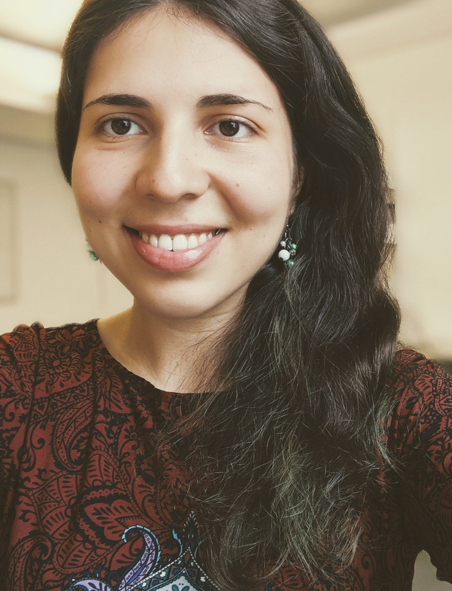

I'm a first-year PhD student within the Artificial Intelligence Group of the Computer Laboratory, where I am devising new machine learning (especially deep learning) algorithms for health and environmental risk challenges, supervised by Dr Pietro Liò (with Dr Mateja Jamnik as my second adviser) and affiliated with King's College.
I graduated from the Computer Science Tripos at the University of Cambridge in 2016 with a First Class result and also hold an MPhil degree (with Distinction) in Advanced Computer Science from the University of Cambridge, as of July 2017.
Cangea, C., Veličković, P. and Liò, P. (2017) XFlow: 1D-2D Cross-modal Deep Neural Networks for Audiovisual Classification. Workshop on Computational Models for Crossmodal Learning (CMCML) at The 7th Joint IEEE International Conference on Development and Learning and on Epigenetic Robotics (IEEE ICDL-EPIROB 2017). [arXiv preprint] [poster]
This work was also presented at the ARM Research Summit 2017, in the poster session.
Each year at the beginning of December, Cambridge colleges carry out admissions interviews for the Computer Science Tripos. This process can last anywhere between a few hours and a whole week(!!!), depending on the number of applicants. I have interviewed CST applicants in 2016 (for Murray Edwards College - a surreal experience, given that only 4 years before I was sat at the same desk, on the opposite side, during my own admissions interview :-)...) and in 2017 (for King's College).
Supervised the following Computer Science Tripos students for their Part II projects:
Also supervise(d) the following undergraduate courses for Murray Edwards College and King's College:
Cross-modality in Deep Learning for Audiovisual Classification. Computational Biology Group Meeting, 22 January 2018. Department of Computer Science, University of Cambridge
Research collaborations:
Software engineering internships:
I also took part in Hack Cambridge, winning third place in 2017. We showed that you can trick a face recognition system quite easily, if you've got access to the neural network architecture!
At the start of my fourth year in Cambridge, I took up rowing and was a member of Darwin College Boat Club until October 2017, racing in Bumps as part of the Women's Second Boat. I'm currently training with the Women's First Boat in King's College Boat Club.
My relentless lifelong passion is music - I play piano and guitar, having been part of Paper Playground (keyboards and backing vocals) ever since early 2017. We perform at pub gigs and the Open Mic nights in Darwin College, having opened for its May Ball in 2017. In 2018, we also played at St John's May Ball.
Address:
Cătălina Cangea
Office FE14
Artificial Intelligence Group
Department of Computer Science and Technology
University of Cambridge
15 JJ Thomson Avenue
Cambridge CB3 0FD
United Kingdom
Email: Catalina [dot] Cangea [at] cl [dot] cam [dot] ac [dot] uk